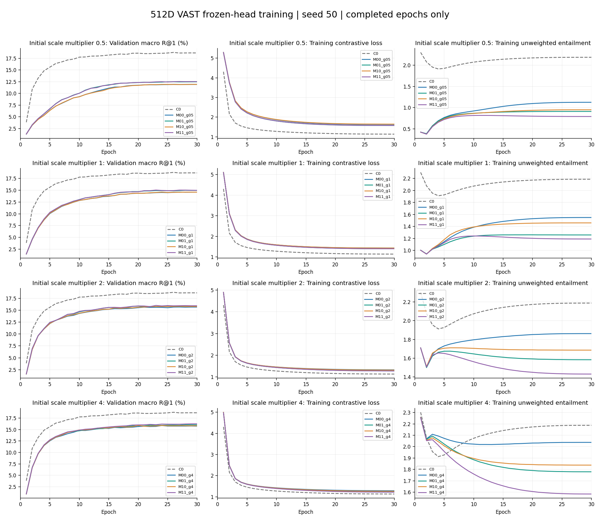
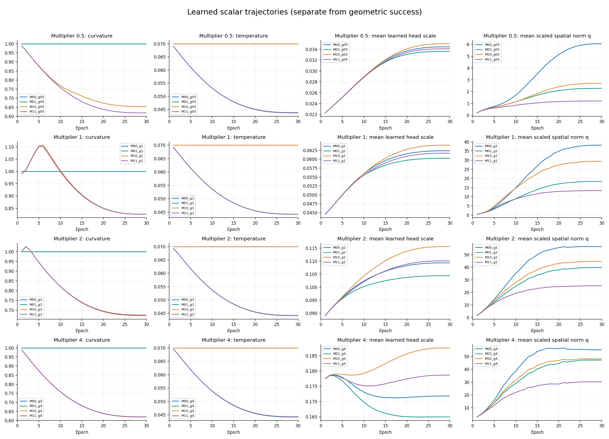
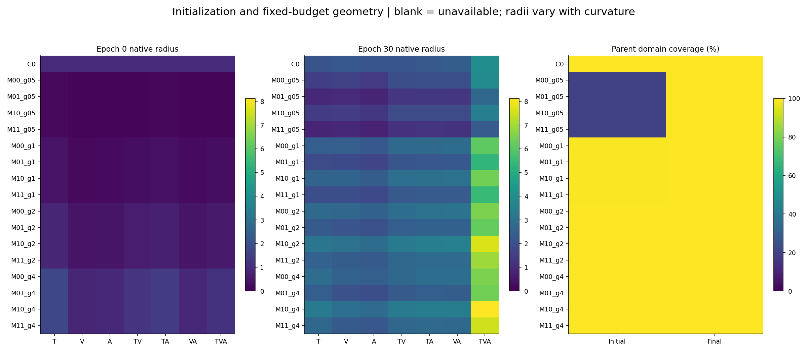
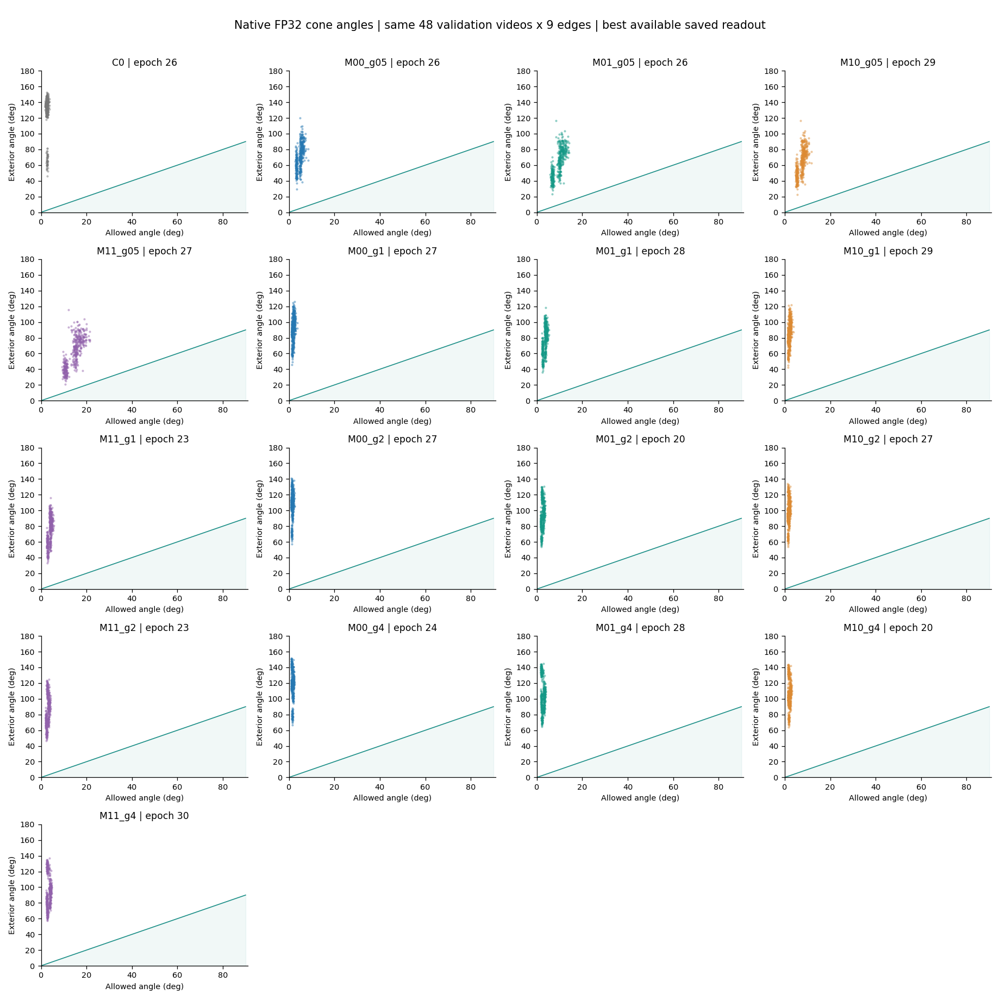
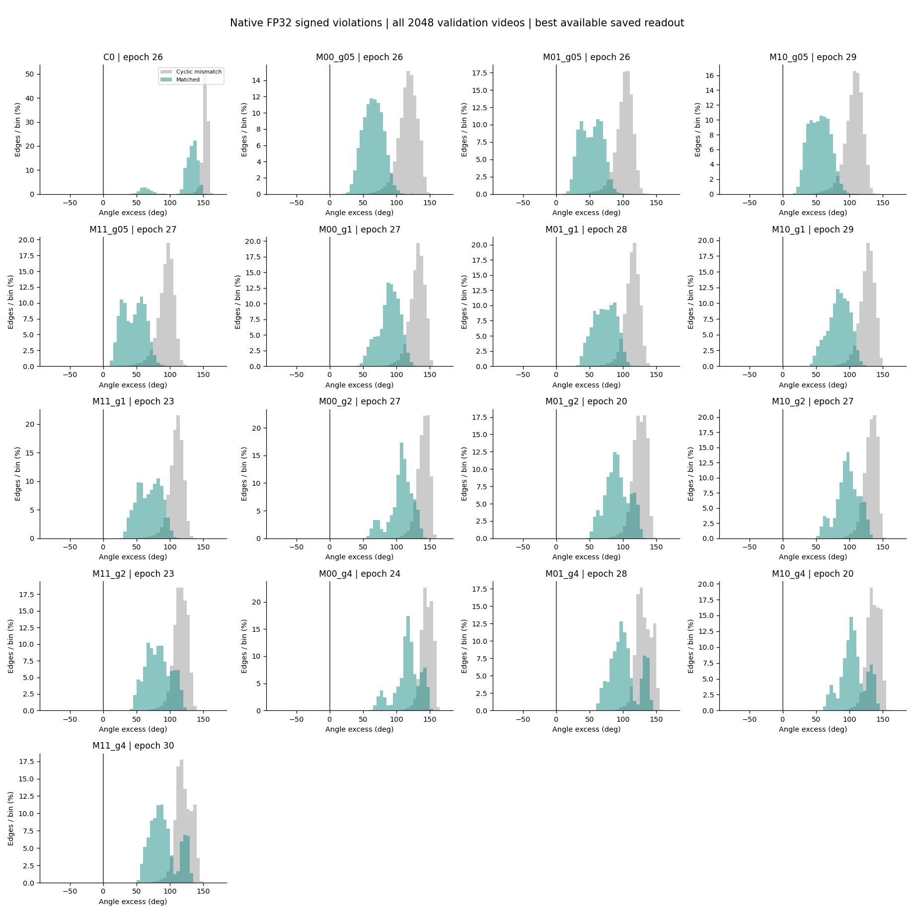
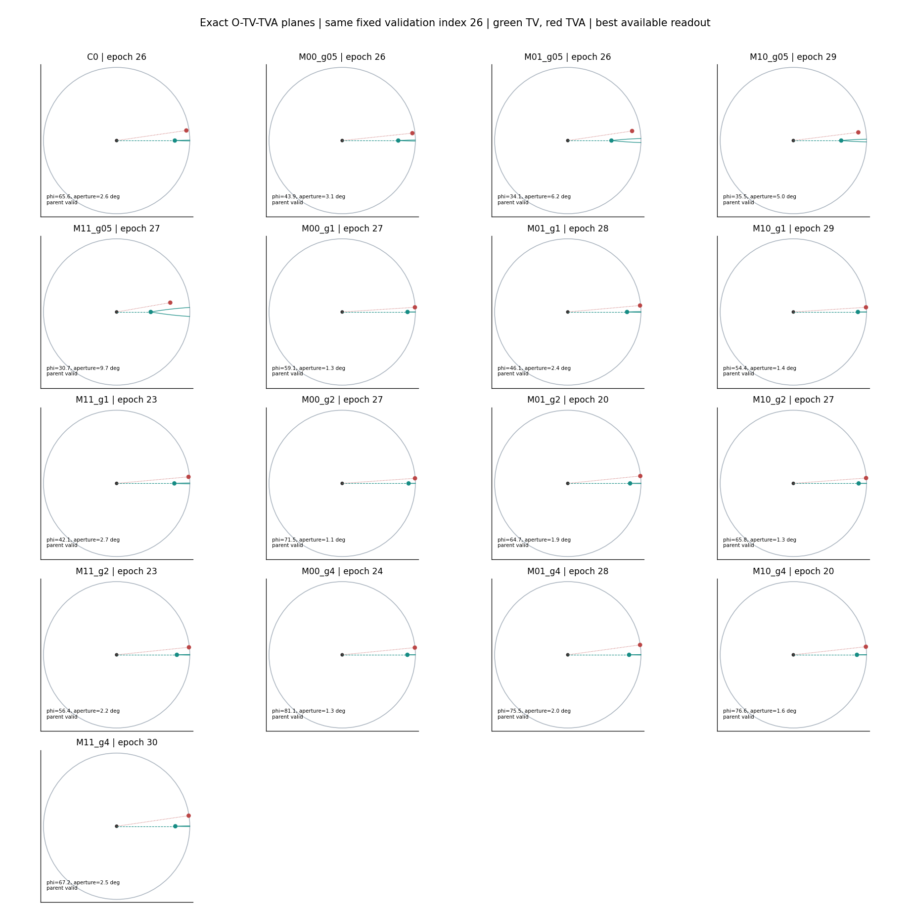
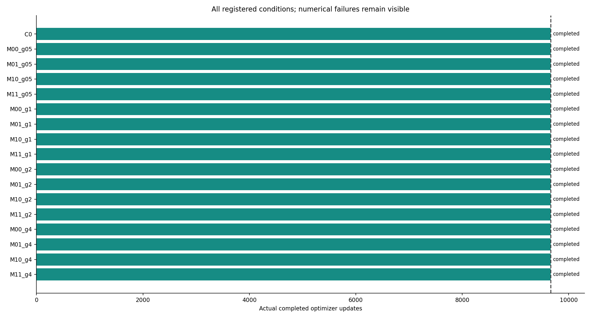

更新：2026-10-26T14:43:58.175751+00:00。仅VAST验证集2048样本，seed50；每组30轮、9660次更新。没有MSRVTT微调或测试集评估。固定顺序展示，不作方法优劣判断。
未完成或失败的条件不以提前停止结果替代末轮。
| 条件 | 状态 | 轮次 | 实际更新 | R@1 | R@5 | R@10 | 父点合法域% | 截断满足% | 合法对中满足% | 合法且满足/全部% | 九边全部合法且满足% | 曲率 | 温度 |
|---|---|---|---|---|---|---|---|---|---|---|---|---|---|
| C0 | completed | 30 | 9660 | 18.6605 | 37.2233 | 46.8587 | 100.0000 | 0.0000 | 0.0000 | 0.0000 | 0.0000 | 1.0000 | 0.0700 |
| M00_g05 | completed | 30 | 9660 | 11.9303 | 26.9368 | 35.7422 | 100.0000 | 0.0000 | 0.0000 | 0.0000 | 0.0000 | 1.0000 | 0.0700 |
| M01_g05 | completed | 30 | 9660 | 12.4919 | 28.1169 | 37.1826 | 100.0000 | 0.0000 | 0.0000 | 0.0000 | 0.0000 | 1.0000 | 0.0437 |
| M10_g05 | completed | 30 | 9660 | 11.9303 | 26.6764 | 35.4899 | 100.0000 | 0.0000 | 0.0000 | 0.0000 | 0.0000 | 0.6540 | 0.0700 |
| M11_g05 | completed | 30 | 9660 | 12.5407 | 28.0599 | 37.3942 | 100.0000 | 0.0000 | 0.0000 | 0.0000 | 0.0000 | 0.6190 | 0.0436 |
| M00_g1 | completed | 30 | 9660 | 14.5833 | 30.9814 | 40.1449 | 100.0000 | 0.0000 | 0.0000 | 0.0000 | 0.0000 | 1.0000 | 0.0700 |
| M01_g1 | completed | 30 | 9660 | 14.9495 | 31.7301 | 40.7796 | 100.0000 | 0.0000 | 0.0000 | 0.0000 | 0.0000 | 1.0000 | 0.0442 |
| M10_g1 | completed | 30 | 9660 | 14.5833 | 31.0954 | 40.2262 | 100.0000 | 0.0000 | 0.0000 | 0.0000 | 0.0000 | 0.8259 | 0.0700 |
| M11_g1 | completed | 30 | 9660 | 14.9740 | 31.8034 | 40.8122 | 100.0000 | 0.0000 | 0.0000 | 0.0000 | 0.0000 | 0.8255 | 0.0442 |
| M00_g2 | completed | 30 | 9660 | 15.6657 | 32.4707 | 41.3167 | 100.0000 | 0.0000 | 0.0000 | 0.0000 | 0.0000 | 1.0000 | 0.0700 |
| M01_g2 | completed | 30 | 9660 | 15.8040 | 32.9427 | 42.0003 | 100.0000 | 0.0000 | 0.0000 | 0.0000 | 0.0000 | 1.0000 | 0.0441 |
| M10_g2 | completed | 30 | 9660 | 15.7878 | 32.5521 | 41.5039 | 100.0000 | 0.0000 | 0.0000 | 0.0000 | 0.0000 | 0.6714 | 0.0700 |
| M11_g2 | completed | 30 | 9660 | 15.9505 | 32.9753 | 41.9678 | 100.0000 | 0.0000 | 0.0000 | 0.0000 | 0.0000 | 0.6746 | 0.0442 |
| M00_g4 | completed | 30 | 9660 | 15.7471 | 32.6172 | 41.8538 | 100.0000 | 0.0000 | 0.0000 | 0.0000 | 0.0000 | 1.0000 | 0.0700 |
| M01_g4 | completed | 30 | 9660 | 16.0238 | 33.0811 | 42.2038 | 100.0000 | 0.0000 | 0.0000 | 0.0000 | 0.0000 | 1.0000 | 0.0441 |
| M10_g4 | completed | 30 | 9660 | 15.8285 | 32.9346 | 42.1143 | 100.0000 | 0.0000 | 0.0000 | 0.0000 | 0.0000 | 0.6188 | 0.0700 |
| M11_g4 | completed | 30 | 9660 | 16.2598 | 33.2194 | 42.5700 | 100.0000 | 0.0000 | 0.0000 | 0.0000 | 0.0000 | 0.6198 | 0.0442 |
按验证macro R@1、R@5、较早轮次读取，包含epoch0；失败条件的早期最佳结果仅作为运行记录。
| 条件 | 状态 | 轮次 | 实际更新 | R@1 | R@5 | R@10 | 父点合法域% | 截断满足% | 合法对中满足% | 合法且满足/全部% | 九边全部合法且满足% | 曲率 | 温度 |
|---|---|---|---|---|---|---|---|---|---|---|---|---|---|
| C0 | completed | 26 | 9660 | 18.7744 | 37.1663 | 46.8262 | 100.0000 | 0.0000 | 0.0000 | 0.0000 | 0.0000 | 1.0000 | 0.0700 |
| M00_g05 | completed | 26 | 9660 | 11.9385 | 26.9124 | 35.6689 | 100.0000 | 0.0000 | 0.0000 | 0.0000 | 0.0000 | 1.0000 | 0.0700 |
| M01_g05 | completed | 26 | 9660 | 12.5000 | 28.1087 | 37.1175 | 100.0000 | 0.0000 | 0.0000 | 0.0000 | 0.0000 | 1.0000 | 0.0438 |
| M10_g05 | completed | 29 | 9660 | 11.9385 | 26.6846 | 35.4980 | 100.0000 | 0.0000 | 0.0000 | 0.0000 | 0.0000 | 0.6540 | 0.0700 |
| M11_g05 | completed | 27 | 9660 | 12.5488 | 28.0518 | 37.3210 | 100.0000 | 0.0000 | 0.0000 | 0.0000 | 0.0000 | 0.6195 | 0.0437 |
| M00_g1 | completed | 27 | 9660 | 14.5915 | 30.9326 | 40.0716 | 100.0000 | 0.0000 | 0.0000 | 0.0000 | 0.0000 | 1.0000 | 0.0700 |
| M01_g1 | completed | 28 | 9660 | 14.9821 | 31.7383 | 40.7552 | 100.0000 | 0.0000 | 0.0000 | 0.0000 | 0.0000 | 1.0000 | 0.0442 |
| M10_g1 | completed | 29 | 9660 | 14.5915 | 31.0872 | 40.2344 | 100.0000 | 0.0000 | 0.0000 | 0.0000 | 0.0000 | 0.8260 | 0.0700 |
| M11_g1 | completed | 23 | 9660 | 15.0309 | 31.6081 | 40.6901 | 100.0000 | 0.0000 | 0.0000 | 0.0000 | 0.0000 | 0.8339 | 0.0447 |
| M00_g2 | completed | 27 | 9660 | 15.6820 | 32.4626 | 41.3737 | 100.0000 | 0.0000 | 0.0000 | 0.0000 | 0.0000 | 1.0000 | 0.0700 |
| M01_g2 | completed | 20 | 9660 | 15.8854 | 32.8206 | 41.7806 | 100.0000 | 0.0000 | 0.0000 | 0.0000 | 0.0000 | 1.0000 | 0.0454 |
| M10_g2 | completed | 27 | 9660 | 15.8285 | 32.5358 | 41.5283 | 100.0000 | 0.0000 | 0.0000 | 0.0000 | 0.0000 | 0.6720 | 0.0700 |
| M11_g2 | completed | 23 | 9660 | 16.0156 | 32.9671 | 42.0410 | 100.0000 | 0.0000 | 0.0000 | 0.0000 | 0.0000 | 0.6816 | 0.0446 |
| M00_g4 | completed | 24 | 9660 | 15.8773 | 32.5928 | 41.7887 | 100.0000 | 0.0000 | 0.0000 | 0.0000 | 0.0000 | 1.0000 | 0.0700 |
| M01_g4 | completed | 28 | 9660 | 16.0400 | 33.0566 | 42.1712 | 100.0000 | 0.0000 | 0.0000 | 0.0000 | 0.0000 | 1.0000 | 0.0441 |
| M10_g4 | completed | 20 | 9660 | 15.9017 | 32.6497 | 41.7969 | 100.0000 | 0.0000 | 0.0000 | 0.0000 | 0.0000 | 0.6379 | 0.0700 |
| M11_g4 | completed | 30 | 9660 | 16.2598 | 33.2194 | 42.5700 | 100.0000 | 0.0000 | 0.0000 | 0.0000 | 0.0000 | 0.6198 | 0.0442 |
曲线只画已实际产生的记录，不补齐失败条件。定义域外、截断满足和合法域包含分别统计。






